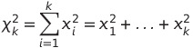
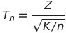
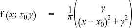

Researches about pure theory (T)
T17. Search on the web about possible derivation of the Normal Distribution.Researches about applications (A)
A12. Consider R (radius), A(angle) uniform rv's and use them as random polar coordinates on a plane. Determine the empirical distribution of the corresponding Cartesian coordinates (X,Y).Researches about theory relevant to applications (TA)
TA7. Find in the web what are the distributions that you just simulated.T17.
The normal distribution, also known as the Gaussian distribution, is a probability distribution that is symmetric about the mean,
showing that data near the mean are more frequent in occurrence than data far from the mean.
In graphical form, the normal distribution appears as a “bell curve”.
The normal distribution follows the following formula:
Where:
- x = value of the variable or data being examined and f(x) the probability function
- μ = the mean
- σ = the standard deviation
Many naturally-occurring phenomena appear to be normally-distributed. Take, for example, the distribution of the heights of human beings.
The average height is found to be roughly 175 cm (5' 9"), counting both males and females.
Most people are conform to that average. Meanwhile, taller and shorter people exist, but with decreasing frequency in the population.
According to the empirical rule, 99.7% of all people will fall with +/- three standard deviations of the mean, or between
154 cm (5' 0") and 196 cm (6' 5"). Those taller and shorter than this would be quite rare (just 0.15% of the population each).
In simple terms, the normal distribution describes a symmetrical plot of data around its mean value,
where the width of the curve is defined by the standard deviation.
In this distribution, the mean (average), median (midpoint), and mode (most frequent observation) are all equal to one another.
Moreover, these values all represent the peak, or highest point, of the distribution. The distribution then falls symmetrically around the mean,
the width of which is defined by the standard deviation.
There are different possible derivations of the Normal Distribution, examples of them are:
- De Moivre-Laplace theorem (special case of the central limit theorem), which proves that a binomial distribution can be approximated to a normal distribution (in particular cases).
It shows that the probability mass function of the random number of “successes” observed in a series of n independent Bernoulli trials,
each having probability p of success, converges to the probability density function of the normal distribution with mean np and
standard deviation sqrt(np(1-p)) as n grows large, assuming p is not 0 or 1.
- Gaussian functions are used to represent the probability density function of a normally distributed random variable with mean = b and variance = c^2.
- Central Limit Theorem (CLT) which establishes that, in many situations, when independent random variables are summed up,
their properly normalized sum tends toward a normal distribution even if the original variables themselves are not normally distributed.
T18.
There are different methods to generate a normal variate. Two of them are:
- Box-Muller transform, that is a random number sampling method for generating pairs of independent, standard, normally distributed
random numbers, given a source of uniformly distributed random numbers. It was developed as a more computationally efficient alternative to the inverse transform sampling method.
There is also the ziggurat algorithm that gives a more efficient method for scalar processors (e.g. old CPUs), meanwhile the Box-Muller transform is superior for processors with vector units.
The formula is:
Where U1 and U2 are independent samples chosen from the uniform distribution on the unit interval (0, 1).
U1 is seen as the radius and U2 as an angle, we execute a transformation from polar to linear coordinates.
The generated variables follow a normal distribution with mean 0 and variance 1.
- Marsaglia polar method is a method for generating a pair of independent standard normal random variables by choosing random points (x, y) in the square -1 < x < 1, -1 < y < 1 until:
and then returning the required pair of normal random variables as:
A12.
The application allows the generation of n points in the Cartesian plane thanks to random radius and random angle. It is also possible to choose the max distance.
On the second tab it is possible to view the distribution of the y-axis and x-axis points.
Source code!
A13.
Thanks to the application, it is possible to generate different distributions from normal variables.
Through the generate button we create the graph and via the combobox we can choose the desired distribution.
We also have the option of choosing the number of variables and histograms to represent.
Source code!
TA7.
The distribution simulated are:
- Normal Distribution (X): It is the easiest one, it’s the representation of a random normal variable X
- Chi-squared Distribution (X^2): It is defined as a sum of k normal random variables xk with mean 0 and variance 1, each squared

The parameter k is the degree of freedom of the random variable
- Student-T distribution (X/Y^2):

Where Z is a normal random variable and K is a Y^2 random variable with n degrees of freedom (in our exercise one degree)
- Fisher-Snedecor Random Variable (X^2/Y^2): can be defined as
Where S1 and S2 are our two X^2 indipendent normal random variables with degree of freedom d1 and d2 (in our exercise one degree)
- Cauchy Random Variable (X/Y): Can be defined as

It is a continuos probability distribution with PDF (probability density function). x0 is the location of the peak of the distribution
and y shows half of the width at half of the maximum height (in our exercise, x0 is 0 and y is 1)